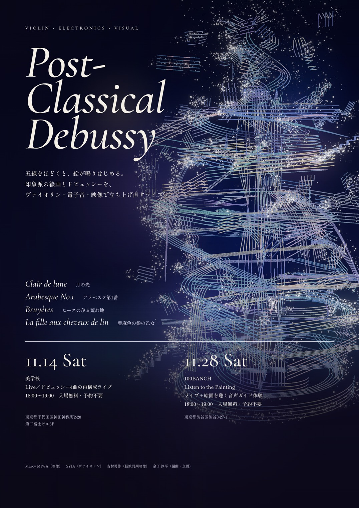

提案者 金子淳平 ／ 2026年11月3日
1. 絵画を聴く案
今の研究を、会議室に展開する。物音に、絵画の世界としての意味を与える。
2. ポストクラシカル案
実践している活動を、会議室に設置する。印象派の絵とドビュッシーの音楽を、オフィスの会議室に置く。
研究
絵画の音を、ある程度の数、作れるようにする手法を考えている。
情報処理学会の論文に向けて進めている。
展開
この研究を、会議室のような日常の部屋に展開したい。
印象派は、郊外の自然を描いて都市に持ってくることで、
都市化した場所にいる人が自然を感じられるようにした。
この役割を、会議室のような部屋の中で拡張したい。
問題
物音（タイピング音など）が苦手。
これまで物音は、消す（耳栓、ノイズキャンセル）、被せる（マスキング）、置き換える（センサーで別の音に変える）で扱われてきた。
消すと周りの気配も消え、被せると部屋の音が増え、置き換えは一人の体験にとどまる。
実感
物音に意味が付くと、楽になる。
これは私の実感としてあり、体系的にも整理したい。
提案
物音に、絵画の世界としての意味を与える。
絵の世界の音を、物音と同じ質感で作って重ねる。
素材には、その部屋の生活音を使う。
確かめること
音環境のちょうどよさが、どう変わるか。
意味を付けると楽になる、という実感が、どこまで言えるか。
| 物音 | 物音の性質 | 絵の世界の音 |
|---|---|---|
| タイピング音 | 細かく粒立つ | 雨の音 |
| 車の通過音 | ゆっくり寄せて、引く | 波の音 |
| 空調の音 | 一定に続く | 風の音 |
| 話し声 | 中くらいの高さのざわめき | 川のせせらぎ |
| 紙をめくる音 | かすれる | 木の葉の音 |
| ドアの開閉 | 低く、一度だけ | 遠くの雷 |
モニターに絵を映し、横の2チャンネルのスピーカーから音を流す。
iPadでサイトを開き、モニターにつなぐ。
音は事前に作ったものを使う。マイクとリアルタイム変換は使わない。
概要
印象派の絵と音楽を、オフィスの会議室に設置する。
モニターに絵をモチーフにしたアニメーションが映る。
その絵に重ねたドビュッシーの楽曲が、多チャンネルの音響で、部屋に広がる。
背景
印象派絵画は、19世紀の急速な都市化のなかで、密閉された空間から、「絵画」というメディアを通じて自然の光や大気の揺らぎを感じようとした。
現代の急速な社会の変化は、19世紀と重ね合わせられる部分が多いと考える。急速な「最適化」が進むこの時代に、絵画やクラシック音楽をメディウムとして、何を伝えられるだろうか。
かつて印象派が提示したような、急速な流れに対する「隙間」を、堀ビルの中に作れないだろうか。
コンセプト
ドビュッシーのピアノ曲を、ヴァイオリン、電子音響、環境音で編曲し、
曲ごとに、印象派の絵を1枚重ねる。
実践イベント「Post-Classical Debussy」
2026年11月14日（土） 美学校
2026年11月28日（土） 100BANCH
SYIA（ヴァイオリン）／金子淳平（電子音響・企画）
Marcy MIWA（映像）／吉村勇作（脳波）
展開の射程
商業施設、歴史的建築、寺社などの日常の場所で体験できるものにしたい。
オフィスの会議室で実証するのは面白いと考えた。
